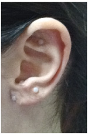

相关证明

Giancarlo Bazzoni
M.D.
Director of International Medical School of Auricular Acupuncture
Advantages of 新的Pyonex
Effective, secure, accuracte, innovative, painless therapy, exceptional adesion, good patient compliance, modulation of therapy, continuous stimulation, chrono stimulation, self-treatment, alternate auricular stimulation. 高效，安全，精确，革新，无痛疗法，特殊设计，耐心服侍，调制疗法，持续刺激，慢性刺激，自我疗法，耳穴交替刺激。
How I use 新的Pyonex,
Clinical Application of 新的Pyonex
Along with the increasing growth and diffusion of auricular acupuncture, new ways of auricular stimulation have appeared. Particularly important is the continuous stimulation between treatments. This new method is applied between one session and the next, and it optimizes treatment out come and reduces the number of treatments required. Among the various forms of stimulation most effecive are metal beads, vaccariae seeds, and semi-permanent auricular needles. The New Pyonex belongs to the last category. Thanks to the adhesive patch being included, they are very easy to handle, easy to apply and easy remove. Patients should stimulate 新的Pyonex several times a week with gentle contact of fingers to avoid the loss of the effect due to the habituation of receptors, The exceptional adhesion and resilience of the 新的Pyonex makes it possible for it to be attached on the ear’s surface for various time periods - from a few days to two or three weeks or more. 随着耳穴针灸的逐步扩散，新的耳穴针灸刺激疗法也随之出现。尤其是治疗期间的持续针灸疗法尤为凸出。这种新疗法应用于一个阶段和下一个阶段之间， 并且它能优化治疗效果和减少治疗需求的数量。在各种针灸刺激治疗形式中，最有效的还是金属珠，王不留行籽，和半永久耳穴针。新的Pyonex则属于最后一种。 由于有附着了黏贴胶片在里面，针非常容易使用，处理和拿掉。患者应该用新的Pyonex针灸一周多次，并要用手指温和地接触以避免由于受体穴位的不适应而失效。 新的Pyonex针由于有独特的附着性和韧性使得它在各种时期都可以做到附着在耳朵表面几天到两到三周不等。
One feature of the 新的Pyonex that makes it particulary effective for long-term theapy is the option of using different needle lenghs (0.3 mm Orange, 0.6 Yellow, 0.9 Green, 1.2 Blue, 1.5 Pink). This allows the treatment to be customized according to the auricular point and to the therapeutic action desired, as well as the sensitivity of the patient. For example, using 新的Pyonex could be particularly useful in children and more generally in patients who are intimidated by needles, because the invasiveness of 新的Pyonex is almost nothing. 由于这种新的Pyonex针的特性，使得它在用不同尺寸的针长度（0.3毫米橙，0.6黄，0.9绿，1.2蓝，1.5粉红色）的长期治疗中效果尤为显著。 这使得治疗可以根据耳穴或有特殊需求的治疗方式以及特殊敏感性患者来制定。例如，使用新的Pyonex针能够在小孩子身上或是哪些通常害怕针头的患者身上尤为有用。 因为对于新的Pyonex针来说，针的侵入性几乎是没有的。
The application of 新的Pyonex allows the stimulus to be modulated - more or less strong in relation to the therapeutic action desired and the point treated. In the model proposed by our school, auricular points are divided in neuro-reflex points and functional points. Neuro-reflex points appear at the activation of pain’s receptors. In long-term therapy, stimulation of these points must be strong, so they require 新的Pyonex Blue (1.2mm) and Pink (1.5 mm). Functional points have no correspondance with any particular structure of the body. They are points for general rebalancing and symptom relief and they affect specific functions of the body. These points must be stimulated with 新的Pyonex Orange (0.3 mm) and Yellow (0.6 mm). The 新的Pyonex Green (0.9mm) can be considered as “jolly” points, because they can be used on functional points when the stimulus of orange and yellow 新的Pyonex is too weak. Furthermore they can be used on neuro-reflex points when the stimulus of blue and pink 新的Pyonex is annoying or painful for the patient. 结合治疗手段的需求和穴位的治疗，新的Pyonex针的实际应用中可以允许对针灸进行更强或更弱的调整。在我校提出的模型中，耳穴是神经反射穴位和 功能穴位。神经反射穴位出现在疼痛受体部位活跃的地方。在长期的治疗中，对这些穴位的针灸力度一定要强。因此需要新的Pyonex针蓝色（1.2mm）和粉红色（1.5毫米）。 功能穴位和特殊的身体结构没有对应关系。他们通常是为了重新调节平衡和减轻症状的穴位，并且会影响特殊的身体功能。这些穴位必须用新的Pyonex针橙色（0.3毫米） 和黄色（0.6毫米）进行针灸。新的Pyonex针绿（0.9mm）可以叫做是“愉悦”的针。当神经反射穴位的橙色或蓝色和粉色的新的Pyonex给患者带来疼痛时，则就可以用绿色 来作用于功能穴位。
Now I will introduce three original 新的Pyonex applications developed by our School. 现在我将介绍我们学院的三种原生的新的Pyonex针的应用发展
1. Auricular Microsystem Chronostimulation 1. 耳廓微系统慢性针灸疗法
The application of 新的Pyonex has proven to be extremely effective in auricular chronostimulation. As already stated, patients stimulate the acupoints several times during the day, with slight pressure of a finger. This auricular chronostimulation consists of well defined self-stimulation according to a precise time sequence. When the stimulation is sequential in the correct time sequence, it optimizes the therapeutic effects of auricular acupuncture. Each auricular point has a specific therapeutic action that becomes more effective by following the circadian rhythms. The patient stimulates acupoints at specific times of the day according to the instructions provided by the therapist. This task can also be carried out with special technology, for example thanks to a particular App (application: microsoftware for mobile devices, smartphones and tablets) indicates to the patient the precise time of stimulation, its duration and the auricular points to stimulate. 新的Pyonex针的应用已被证实是一种非常有效的耳廓慢性针灸疗法，如上所述，患者在白天用手指轻轻按压多次针灸穴位。这种耳廓慢性针灸疗法通过精确的时间 定位由准确自我针灸组成。在正确的时间段接受针灸，可以优化耳穴的治疗效果。每一个耳穴都有一个特俗的治疗手段，随着昼夜节律的变化而变得更加有效。 患者在医务人员提供的指导下，每天定时针灸穴位。这个治疗方式也可以通过现代科技技术实现，比如由于一些特定的智能工具（应用：手机软件设备，智能手机或平板电脑） 它能指示患者接受针灸的准确时间，its duration and the auricular points to stimulate.
2. Auriculotherapy and eating behaviour 耳针疗法和饮食规范
Our School has more than ten years experience with thousands of patients in the integrated treatment of obesity. Auricular
stimulation applied to patients who are obese or overweight does the following: 1) Remodulate hunger and satiety sensations
2) Affects psychological aspects of eating behavior, aids stress management, reduceds psychological effects of dietary
restriction (anxiety, anger/aggressiveness, disturbed control impulses), controls emotional eating, binge eating and
food cravings.
We use 新的Pyonex Orange (0.3mm) and Yellow (0.6mm) for these treatments. Sessions take place every
15/30 days.
我校也有十年多的经验对成千上万的肥胖症患者进行一体化治疗。耳针疗法同样也应用于肥胖或超重患者如下：1)调节饥饿感和饱足感。2）作用于饮食规范心理层面，
辅助压力管理，减少节食的心理影响（焦虑，愤怒，不安，无法控制冲动行为），控制情绪的暴饮暴食。我们使用新的Pyonex橙色（0.3毫米）和黄色（0.6毫米）作为
对于治疗肥胖的手段。每15/30天一个疗程。
3. Auricular Microsystem alternate stimulation 耳廓微系统交替针灸疗法
In this method of alternating stimulation (alternating
right and left) patients stimulate Pyonex (orange and yellow) with slight pressure. In this method, Pyonex are placed
in two bilateral auricular points. The stimulation lasts about 3 minutes with a frequency of 30 “hits” finger to needle
every minute. The main basis and rationale for this method is EMDR (Eye Movement Desensititization and Reprocessing).
This technique created by Francine Shapiro, origianlly consisted only of alternating (left to right) eye movements.
Later alternating tactile, visual and sound stimuli were added. EMDR improves communication between the two cerebral
hemispheres, and re-establishes excitatory/inhibitory balance, which was previously disrupted.
From our experience,
we have applied alternating auricular stimulation to improve the stress response and prevent substance abuse, anxiety
and related disorders.
用这种交替针灸方式（左右交替）针灸患者将Pyonex针应放置在耳穴两边，并用Pyonex针（橙或黄色）轻微的按压。每分钟指压针30次，并持续大约3分钟。
该方式的主要依据和理由是EMDR（Eye Movement Desensititization and Reprocessing）。这种技术被Francine Shapiro所发明，最初这种方式是由
眼球的交替（从左到右）而组成。后来又增加了触觉、视觉和声音的刺激。EMDR提高了大脑的左脑和右脑之间的交流，并重新建立起以前被破坏的兴奋/抑制平衡。
根据我们的经验，我们利用交替的耳穴针灸疗法来改善压力反应，防止药物滥用、焦虑和一些其他相关疾病。